Supermetry logo concepts
Round three: no letters. Each mark is a symbol with a meaning, in a modern sci-fi style: deep space blue, electric cyan, soft glow. Every file here is a PNG you can download from the repo’s brand/png folder.
Before you commit: Supermetrics (with an s) is an established marketing-analytics company. Run a trademark search on “Supermetry” before you spend money on the brand.
Orbit
RecommendedYour site is the planet. Supermetry is the satellite in orbit above it, measuring from a distance and beaming back readings. “Super” means above and “-metry” means measuring, so the name is literally telemetry from orbit. The strongest meaning and the easiest to remember.
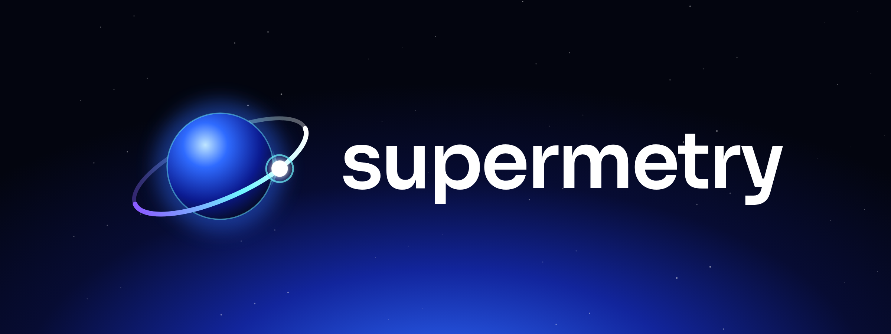
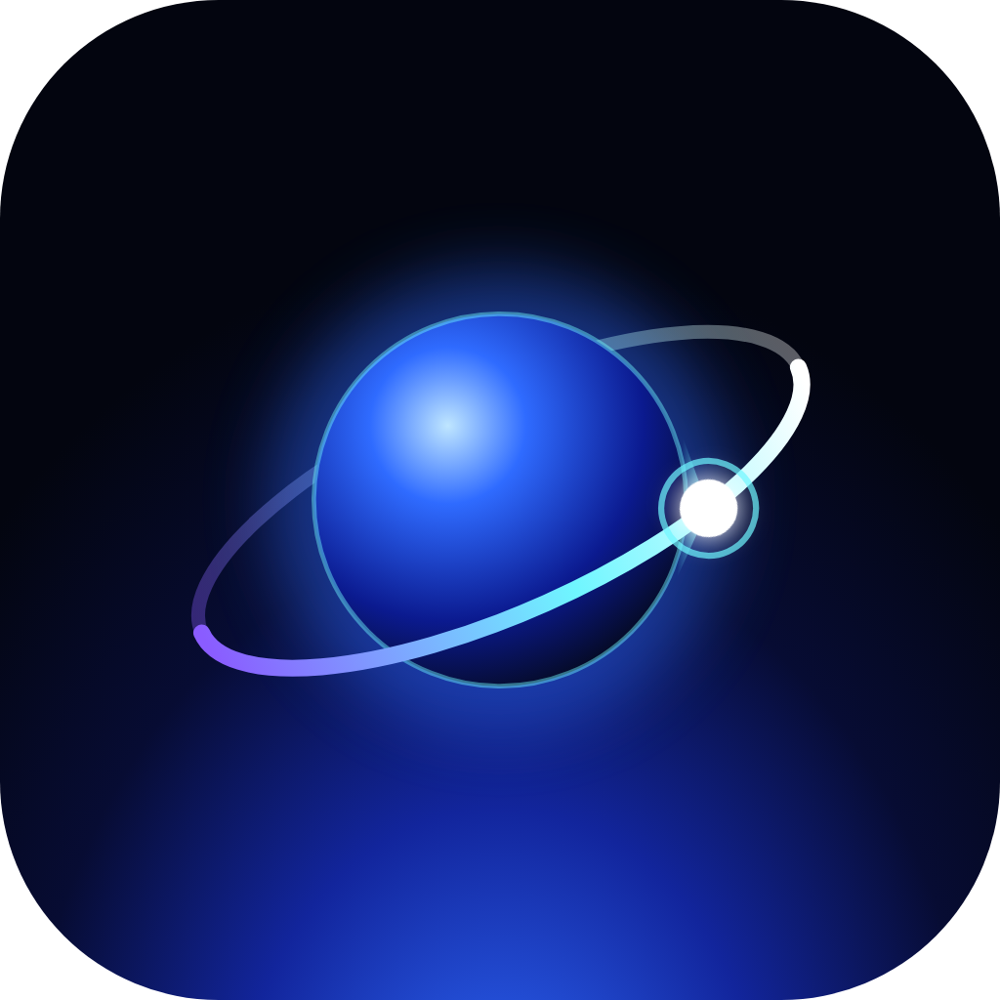
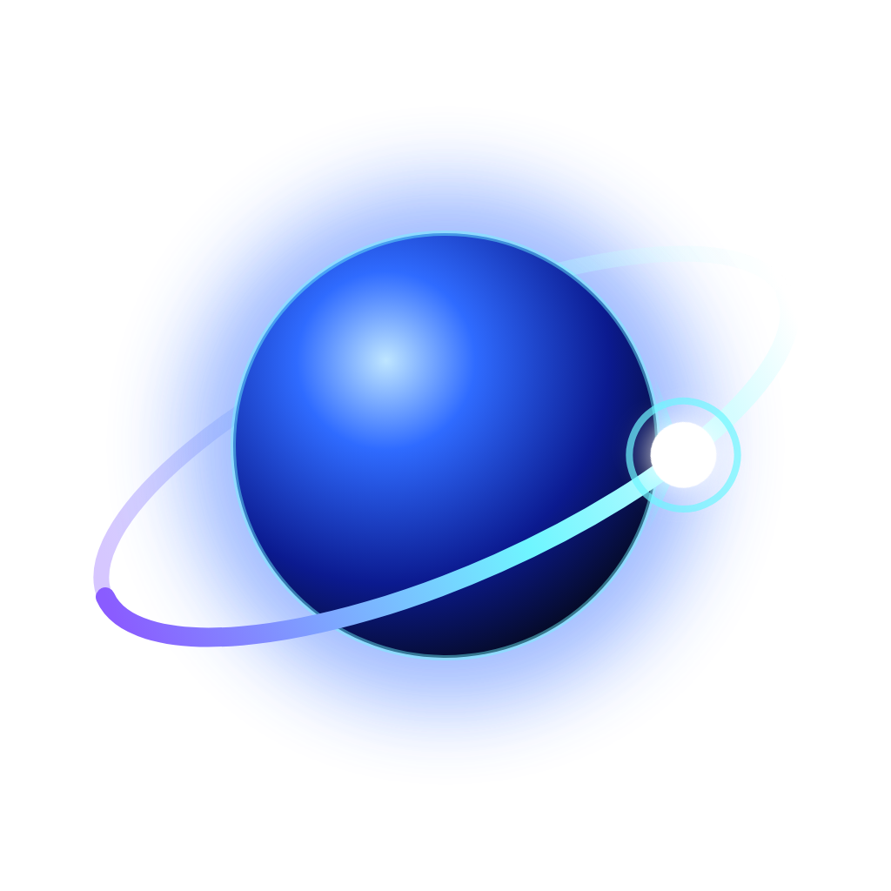
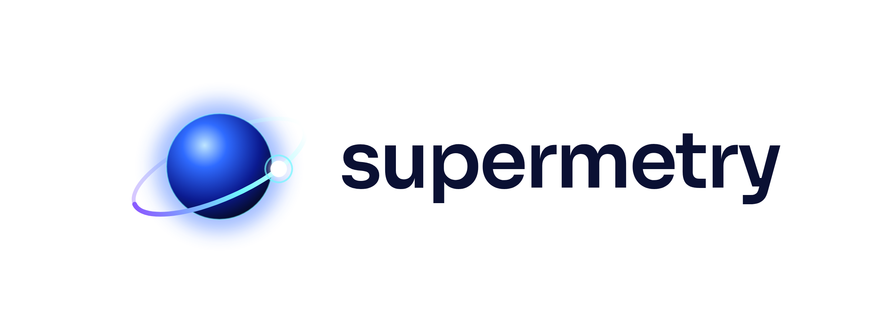
Radar
A live radar sweep that picks up who is on your site right now. Each blip is a visitor, never a face, which is the privacy promise. The most sci-fi of the three and it matches the realtime view.
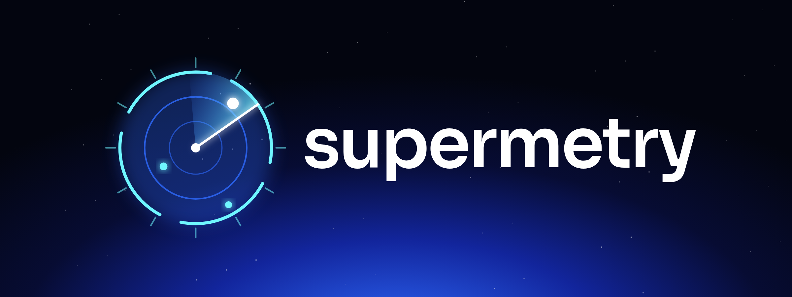
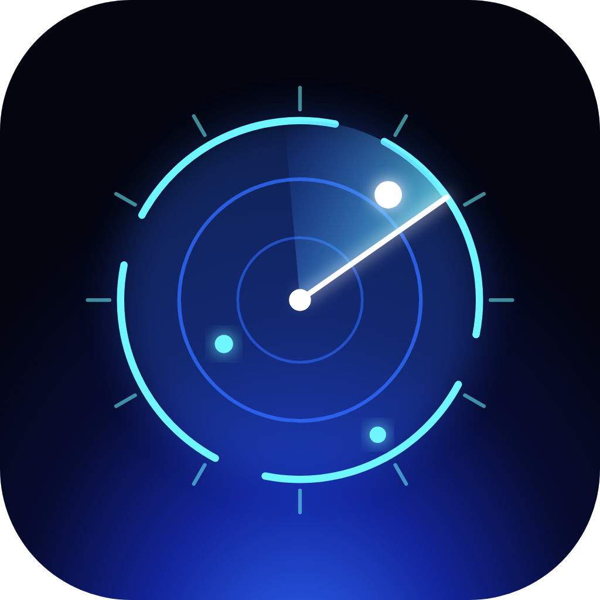
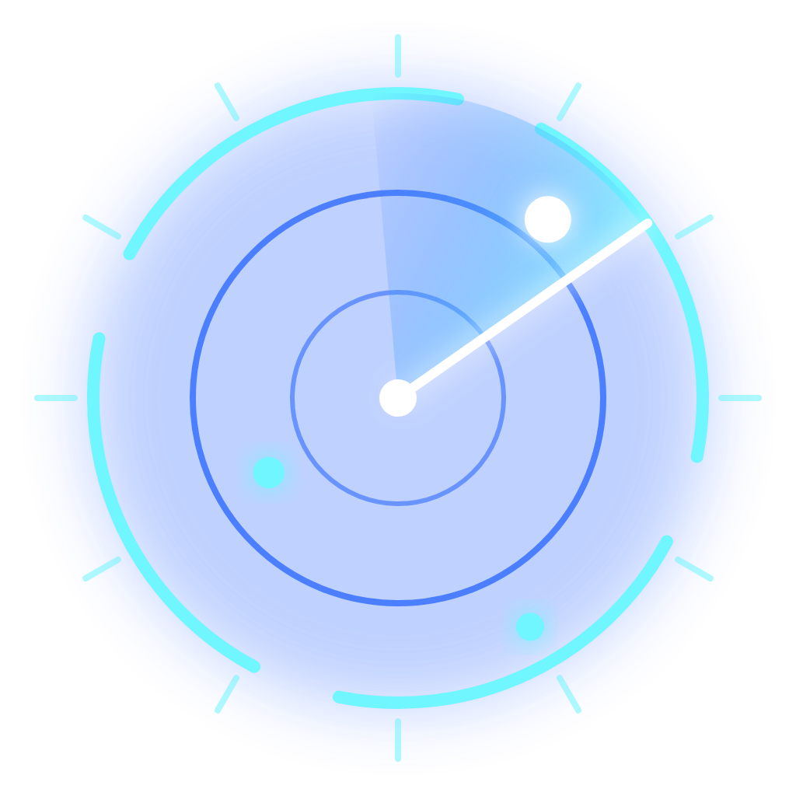
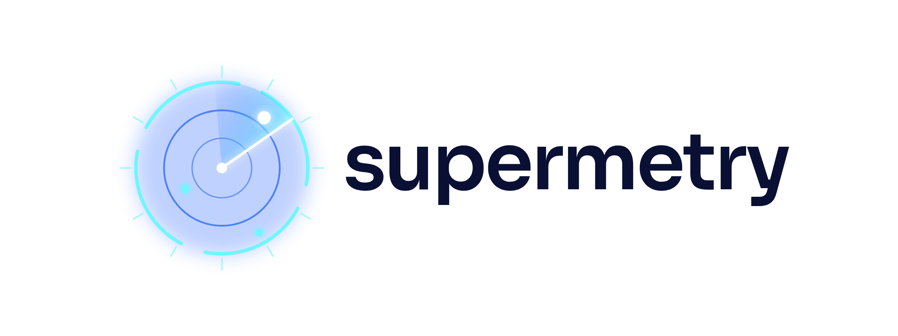
Constellation
Every visitor is an anonymous point of light, and their journeys trace a rising path to the brightest star: your goal. Elegant, but it reads partly as a line chart. Works on dark backgrounds only.
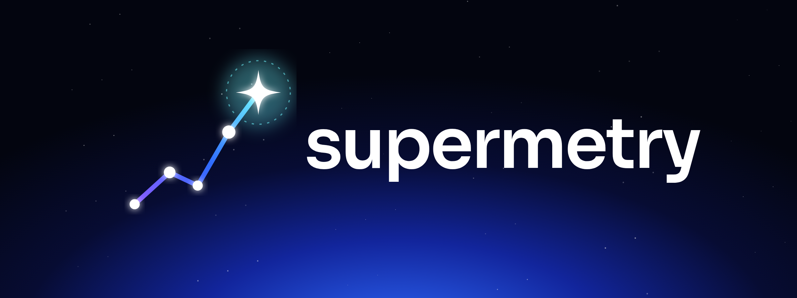
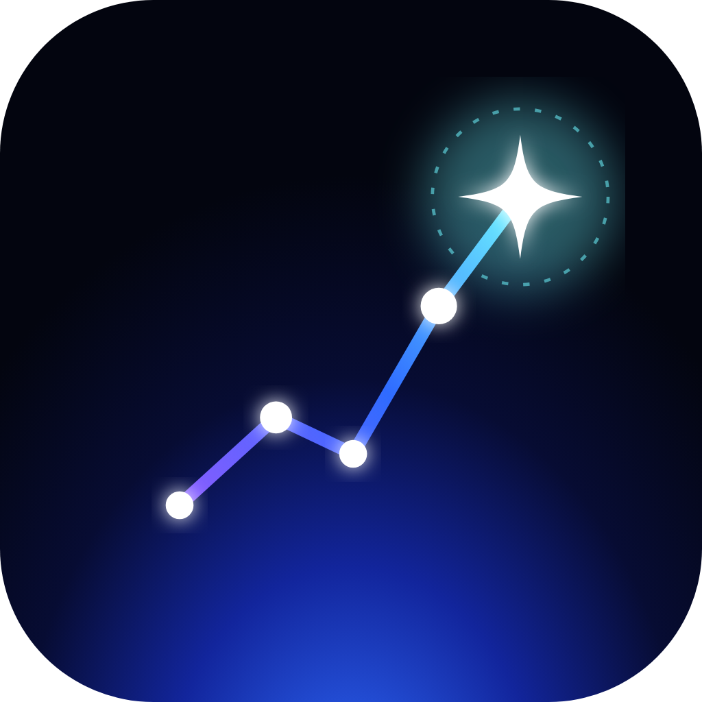
